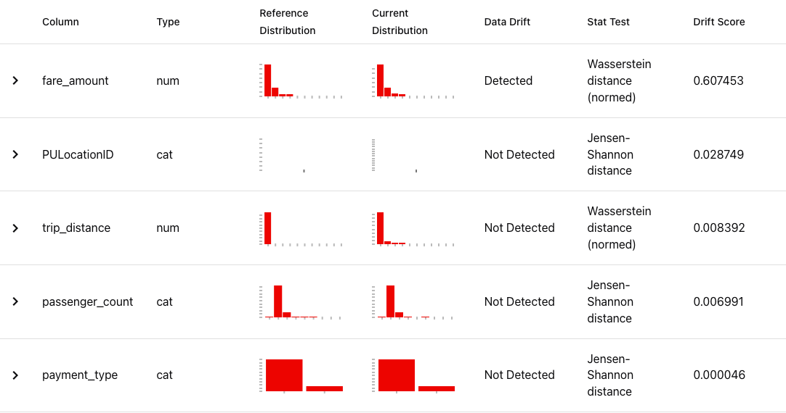

Evidently
Drift и качество данных
Как обнаружить изменение тарифа среди 117 тысяч поездок за день?
Александр Наумцев · ИТМО · 30 ноября 2026
Что изменилось в данных?
Data drift — изменение распределения признака между эталонной и текущей партиями. Его можно обнаружить сразу после загрузки данных.
Качество модели проверяем по прогнозам и фактическим исходам. Для модели стоимости поездки можно сопоставить ошибку прогноза в долларах за оба дня.
В сегодняшнем демо измеряем drift пяти признаков.
Две среды в Нью-Йорке
| Партия | Поездки | Медианный тариф |
|---|
| 8 ноября 2023 · reference | 117 271 | $14,20 |
| 15 ноября 2023 · current | 117 344 | $14,20 |
Берём все поездки жёлтых такси с положительным базовым тарифом до $200 включительно и оплатой картой или наличными.
Пять признаков: тариф, расстояние, число пассажиров, способ оплаты и зона посадки.
Исходные данные NYC TLC · Parquet
Как получить первый отчёт
reference = trips_on("2023-11-08")
current = trips_on("2023-11-15")
report = Report([DataDriftPreset(
num_method="wasserstein", num_threshold=0.1,
cat_method="jensenshannon", cat_threshold=0.1,
)])
result = report.run(reference_data=reference, current_data=current)
result.save_html("control.html")
Каждый метод сравнивает распределения одного признака. Для чисел это нормированное расстояние Вассерштейна, для категорий — расстояние Дженсена — Шеннона.
Открыть исходный отчёт ↗
Меняем один признак
Имитируем ошибочную надбавку в $10. Строки и остальные четыре признака берём из той же партии за 15 ноября.
shifted = current.assign(fare_amount=current["fare_amount"] + 10)
result = report.run(reference_data=reference, current_data=shifted)
result.save_html("shifted.html")
В отчёте раскрываем строку fare_amount и сравниваем распределения стоимости.
Открыть отчёт после надбавки ↗
Какой тест сработал?

Расстояние по тарифу выросло с 0,0095 до 0,6075 и пересекло порог 0,1. Сигнал по одному из пяти признаков даёт 20%. Порог сводной карточки по всему датасету — 50%.
А если сломались категории?
Берём исходную партию за 15 ноября. Представим, что после изменения справочника каждая оплата записалась как наличная.
payment = current.assign(payment_type="cash")
result = report.run(reference_data=reference, current_data=payment)
Расстояние Дженсена — Шеннона по способу оплаты выросло с 0,000046 до 0,6927. Расстояние по тарифу осталось на уровне 0,0095.
Открыть отчёт по способу оплаты ↗
Что делать после сигнала?
- Тариф. Сверить несколько записей с чеками, проверить надбавки, единицы измерения и дату изменения правил.
- Способ оплаты. Сверить исходные коды платежей и их преобразование в
card и cash. - Модель. Когда доступны фактические исходы, сравнить ошибку на двух периодах и отдельно в затронутом сегменте.
Ноутбук с кодом и выводом · Методы и пороги Evidently · Data Drift Preset